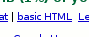
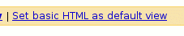

Gmail is a nice webmail. Sadly it is spoiled by a disease that consumes most of the web: javascript.
You could cure Gmail with a link at the bottom
But thereafter a horrible invitation was displayed at the top of the page
And when you left Gmail; it got sick again when you came back! There was no way to keep the basic HTML view across sessions.
Rejoyce people! Because now Gmail allows you to get rid of the bloat:
Despite that absence of all the fancy features. The Basic HTML Gmail is the best webmail I have ever used.